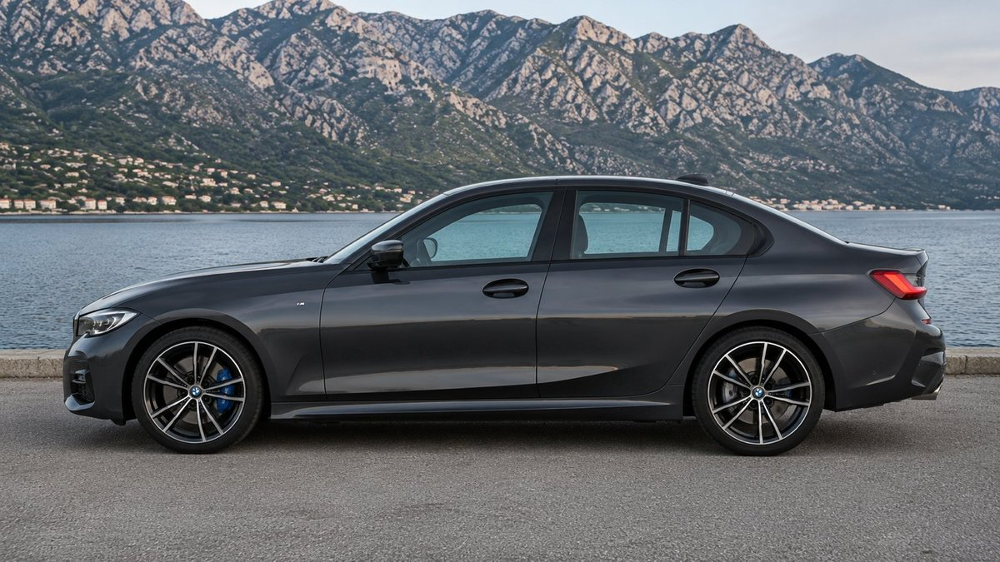
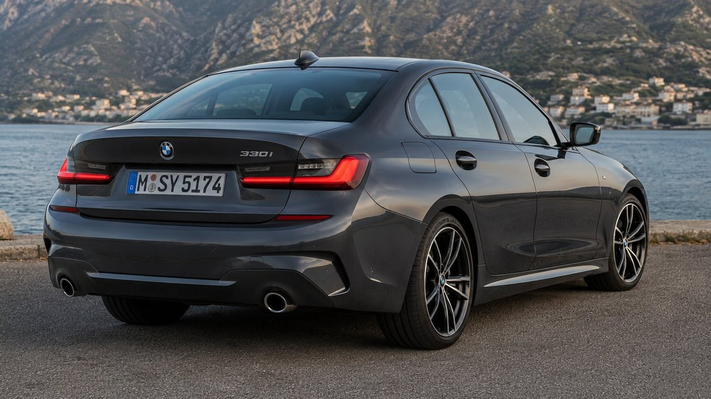
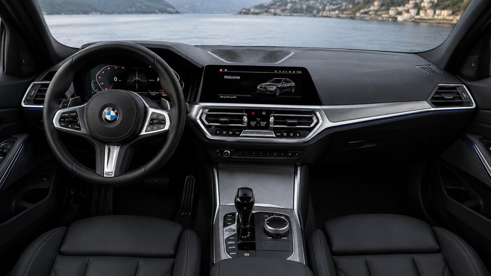

The 3 Series has carried BMW's reputation as the driver's choice for half a century, and the current G20 generation is the version that had to prove the badge still means something in a market drowning in crossovers. The 330i is the volume model in that lineup, and it turns out the formula still works.
Nothing about the exterior tries too hard. The kidney grille is bigger than it used to be, the headlights pull the design forward with a sharp LED signature, and the hood is long enough that you notice it from the driver's seat before you notice it from the curb.

In profile the car reads as a sport sedan first and a family car second, which is exactly the balance BMW has chased since the E30. M Sport wheels and the character line running through the doors keep the silhouette looking planted even when the car is parked.
What the back end gets right
The rear is where the G20 quietly does the most work. Slim L-shaped taillights, a subtle trunk lip, and dual exhaust outlets spaced wide enough to hint at the turbo four working underneath, without shouting about it.

An interior built around the driver
Sit down and the intent is obvious immediately. The 12.3-inch digital instrument cluster and the central iDrive display both angle toward the driver, and every major control sits within a natural reach of the wheel. It's the kind of cockpit layout that makes a rental car from another brand feel like a compromise the next time you drive one.

It's still one of the few interiors in this segment that feels designed around driving, not just occupying.
Material quality holds up under scrutiny too. Soft-touch plastics where your hand actually rests, leather on the seats and wheel, and aluminum trim that doesn't feel like a sticker pretending to be metal.
Engine and performance
Under the hood is BMW's B48, a 2.0-liter turbocharged four making 255 horsepower and 295 lb-ft of torque, run through an eight-speed Steptronic automatic. Zero to 60 mph lands around 5.6 seconds in rear-wheel-drive form, with the xDrive all-wheel-drive version shaving a few tenths off that thanks to better launch traction.
| Spec | Figure |
|---|---|
| Engine | 2.0L turbo inline-4 (B48) |
| Horsepower | 255 hp |
| Torque | 295 lb-ft |
| Transmission | 8-speed Steptronic automatic |
| 0-60 mph | ~5.6 sec (RWD) |
| Drivetrain | RWD, or AWD with xDrive |
None of those numbers are class-leading anymore. What still sets the 330i apart is how the power gets delivered: linear, predictable, with steering that actually tells you what the front tires are doing. That's the part a spec sheet can't capture and the part competitors still struggle to copy.
The verdict
The BMW 330i doesn't need to reinvent itself to stay relevant. It just needs to keep doing the one thing it has always done better than almost anything else in the segment: make a daily commute feel like a reason to take the long way home.
Frequently Asked Questions
What engine does the BMW 330i use?
The 330i uses a 2.0-liter turbocharged four-cylinder, the B48, making 255 horsepower and 295 lb-ft of torque, paired with an eight-speed automatic.
Is the BMW 330i rear-wheel drive or all-wheel drive?
Both are available. The standard 330i is rear-wheel drive, and the 330i xDrive adds all-wheel drive.
How fast is the BMW 330i from 0 to 60 mph?
Around 5.6 seconds for the rear-wheel-drive model, and slightly quicker for the xDrive version thanks to better traction off the line.